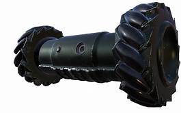
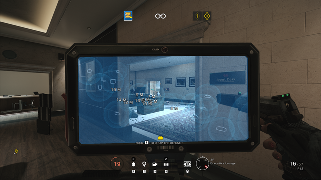

In attack you immidiately spawn in as a drone that you can use to gather as much information you need. You want to try to find the site, hostage, objective, and also take a look at the opposing team's set up and operators. Try to make a plan during prep and coordinate where your team is going to push from.

-made the image bigger so you can see the individual C4s.
In Rainbow Six Siege, there are a lot of operators with their own uniqe gadget that fill in a certain role. There are 7 attacker roles in rainbow six siege. There are Hard Breachers, Hard Breach Support, Soft Breachers, Entry Fraggers, the occasional Flank Watcher, and the Intel Gatherers. The operators' loadout determines their role. For example, IQ, due to her ability which can see any defender gadget in a 20 meter radius she can gather intel really well.